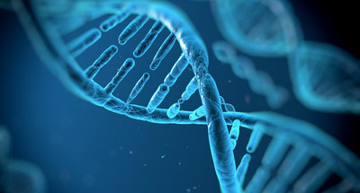

Czy jesteśmy chodzącą zagadką?
Ludzie to niesamowicie interesujące i skomplikowane postacie. Każdy z nas jest jedyny i niepowtarzalny. Nasze organizmy są podobnie zbudowane, komórki, tkanki, narządy etc. Jeśli jesteśmy określani jako "chodzące tajemnice", więc skąd się to określenie wzięło i na jakiej podstawie? Czy to przez kod genetyczny, czy może przez mózg. Prawdą jest to, iż użytkujemy raptem tylko 5%. Co zaś z resztą? Albo dlaczego to ja mam piegi a nie mój brat? Dosyć ciekawe pytania, a wszystko zaczęło się od naszego DNA. To co ono właśnie uwarunkowuje nasz wygląd zewnętrzny. Lecz trzeba zacząć od samego początku, aby móc później wszystko zrozumieć, a więc to jest tak... Kwas deoksyrybonukleinowy, DNA – wielkocząsteczkowy organiczny związek chemiczny. Pełni rolę nośnika informacji genetycznej organizmów żywych. Znajduje się w każdej komórce naszego ciała, która posiada jądro komórkowe. Informacja genetyczna- zapis wszystkich cech dziedzicznych poszczególnych komórek i całego organizmu. Odcinkiem DNA jest "gen", to właśnie on zawiera informacje o określonej cesze organizmu lub elemencie niezbędnym do jej powstania. Dzięki różnorodności genów wszyscy wyglądamy inaczej, nikt nie jest taki sam!
